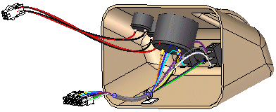

Electrical routing design workflow
Electrical routing design overview
You can use the Electrical Routing application to work with assemblies containing electrical conductors.

To activate the Electrical Routing application, choose Tools tab→Environs group→Electrical Routing.
Solid Edge Electrical routing design is intended to work with round conductors only and does not support ribbon cables.
There is no limit on the number of conductors you can use in an assembly.
Generally, there are two design processes used in harness design. In the first design process a 2D electrical schematic is developed first, and the 3D model is derived from the schematic. In the second design process there is no 2D schematic or it is not used in conjunction with the 3D model.